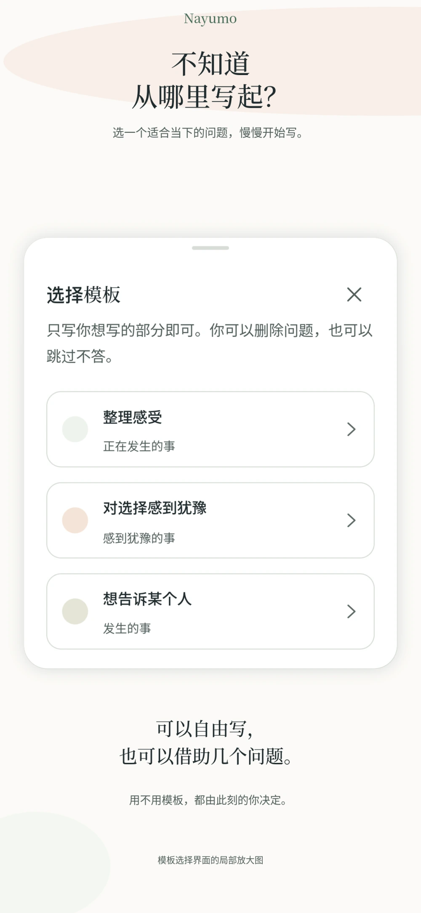
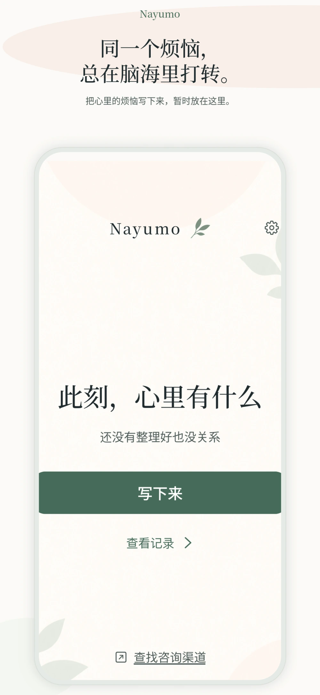
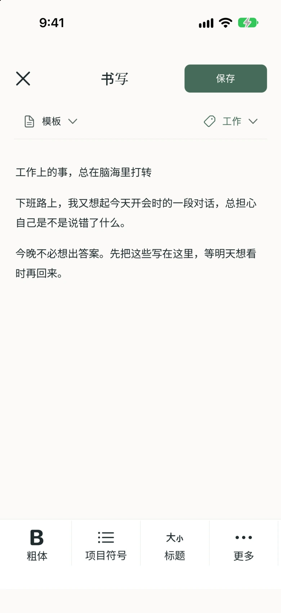
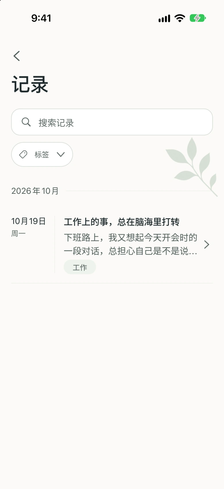
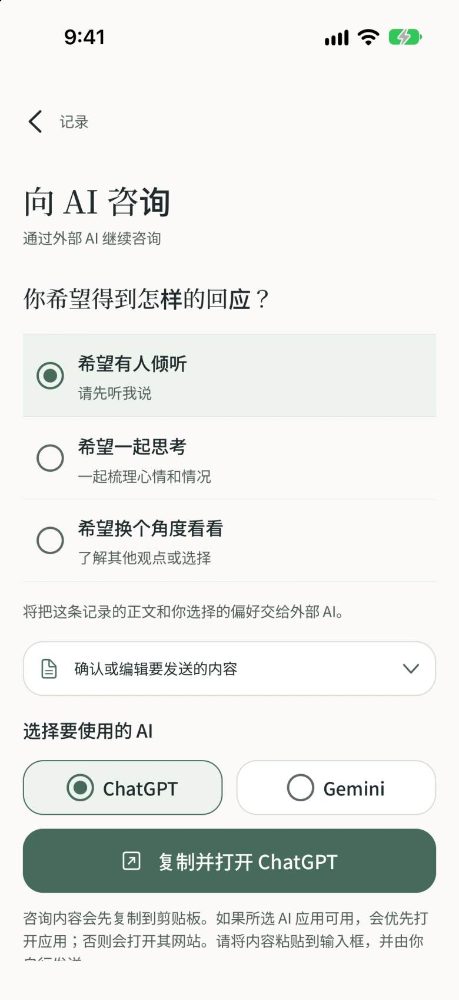

还没理清，
也能开始写。
可以自由写，也可以借助问题。
整理感受、面对选择、想对别人说的话，
选一个适合当下的模板。

Nayumo 是一款记录烦恼与心情的免费笔记应用。把反复盘旋的念头写下来，暂时放在这里。还没找到答案，也可以先保存。


还没整理好，也没关系。
从一句话开始，按自己的节奏。
可以自由写，也可以借助问题。
整理感受、面对选择、想对别人说的话，
选一个适合当下的模板。

还没有答案，也可以先保存。
写一句话，或很长一段都可以。
什么时候停笔，由你决定。
用搜索和标签找到保存的记录。
首页不直接展示过去的正文，
让你从此刻的心情重新开始。


希望有人倾听。希望一起思考。希望换个角度看看。
选好你想得到的回应，再准备要说的话。
交流在外部 AI 服务中进行。请自行粘贴并发送内容。外部服务的使用条款和费用可能另行适用。
写下的记录保存在你的设备中。要交给外部 AI 的文字，由你自行选择并确认。
支持通过设备的生物识别或密码锁定应用。可以在设置中选择适合自己的保护方式。
打开应用，从此刻的心情开始。想回顾过去的文字时，再打开记录查看。
广告和外部 AI 服务会使用网络连接。详情请参阅隐私政策。
Nayumo 是一款把烦恼与心情写下来、暂时放在这里的笔记应用。支持写作模板、标签搜索，以及为外部 AI 准备咨询文字。本应用不用于医疗诊断或治疗。
可以免费使用。
交流在 ChatGPT、Gemini 等外部 AI 服务中进行。你可以在 Nayumo 选择希望得到的回应，确认并编辑文字后复制，再自行粘贴到外部 AI 并发送。
不会。Nayumo 不会自动把记录发送给外部 AI。请先确认咨询文字，再自行复制、粘贴并发送。发送给外部 AI 的内容，将按该服务的政策处理。
没有网络时，也可以写笔记和查看设备内保存的记录。广告、外部 AI 服务和支持页面等需要连接互联网。
Nayumo 不提供自己的云同步功能，记录保存在设备内。你可以将所需记录导出为 Markdown 或 ZIP 文件，但这不代表能自动迁移或同步到另一台设备。
想继续时，再回来。